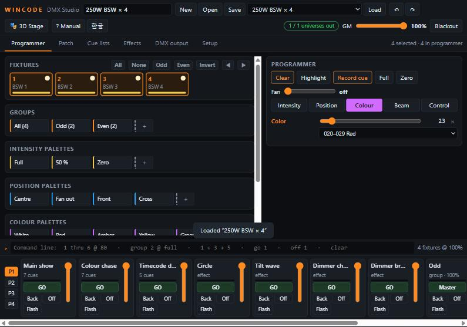
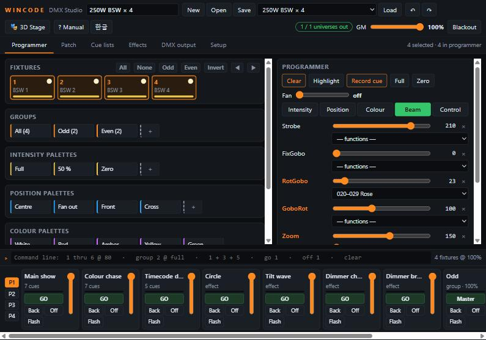
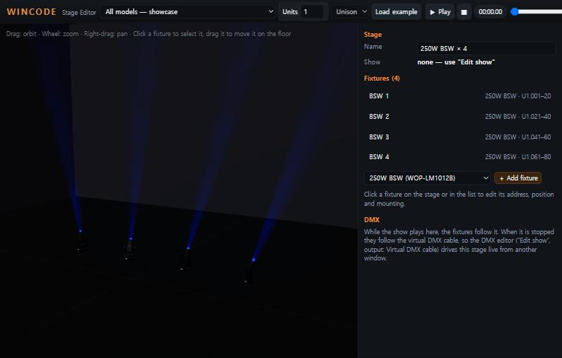
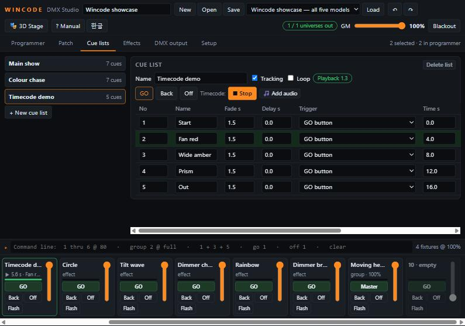
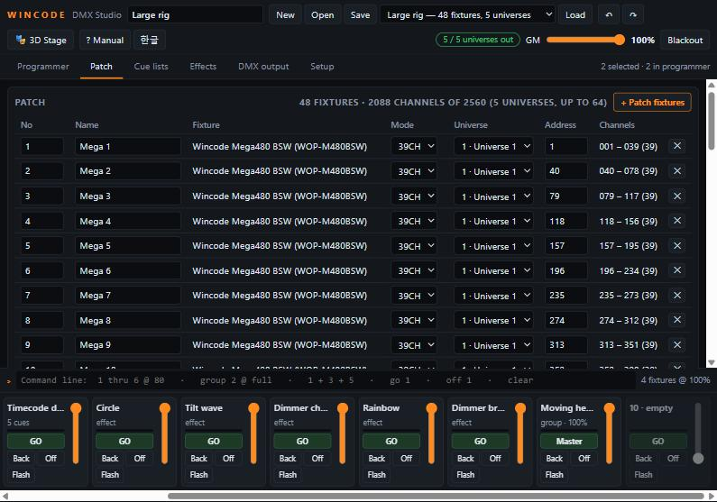
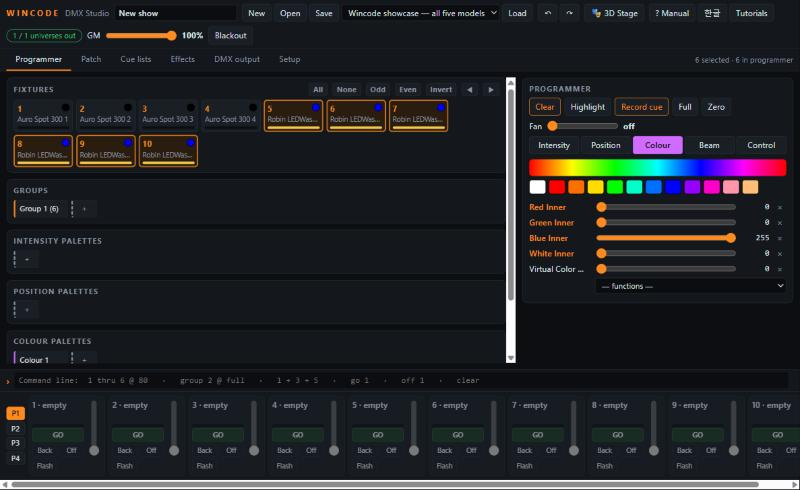
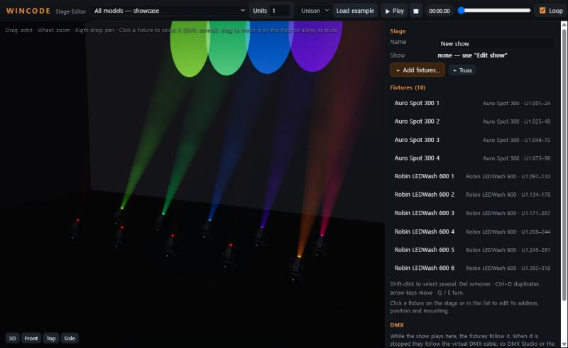

튜토리얼 Wincode DMX Studio · 내장 예제로 직접 해 보며 배우기
각 튜토리얼은 상단 바의 예제 하나에서 출발해, 하나의 작업을 처음부터 끝까지 한 번씩 눌러 가며 진행합니다. 순서대로 하면 내용이 이어지지만, 모든 튜토리얼이 예제를 불러오는 것으로 시작하므로 필요한 것부터 바로 해도 됩니다. 여기에 나오는 기능의 자세한 설명은 사용 설명서에 있습니다.
튜토리얼 6만 예외입니다. 빈 쇼에서 시작해 조명 라이브러리에서 기기를 가져옵니다.
시작하기 전에
- Chrome 또는 Edge에서 DMX Studio를 엽니다: samcho93.github.io/wincodeDmxStudio
- 빛을 보려면 3D 스테이지가 필요합니다. 예제를 불러온 뒤 🎭 3D Stage를 누르고 두 창을 나란히 놓으세요. 다른 예제를 불러올 때마다 🎭 3D Stage를 다시 눌러 새 패치를 스테이지에 넘겨야 합니다.
- 예제를 불러오면 현재 쇼가 바뀝니다. ↶로 되돌릴 수 있고, Save로 파일로 남길 수 있습니다.
- 상자 안의 이름은 화면의 버튼입니다(화면 표시는 영문).
이 글꼴로 된 글자는 명령줄에 입력하고 Enter를 누릅니다.
1. 쇼 진행하기 — 쇼케이스로 10분
예제: Wincode showcase — all five models · 배우는 것: 큐 리스트를 재생하고, 이펙트를 겹치고, 마스터를 쓰는 법 — 공연 당일 오퍼레이터의 일입니다.

- 예제 불러오기. 상단 바의 목록에 이미 Wincode showcase — all five models가 선택되어 있습니다. Load를 누르고 🎭 3D Stage를 누릅니다.
- 메인 큐 리스트 시작. Main show 플레이백의 GO를 누릅니다. 큐 1 Open white가 2.5초에 걸쳐 들어옵니다. 이름 아래 초록 선이 페이드 진행을 보여 주고, 그 위 줄에 1 · Open white가 표시됩니다.
- 쇼 넘기기. GO를 계속 누릅니다: Red fan, Blue wide wash, Amber gobos(이 큐에는 이펙트가 붙어 있어 무빙헤드가 원을 그리기 시작합니다), Magenta prism, Green tight, half, Fade out. 한 번 더 누르면 큐 1로 돌아갑니다. Back은 한 큐 뒤로 갑니다.

3D 스테이지의 큐 4 “Amber gobos”. - 페이더 조작. Main show 페이더를 절반으로 내립니다. 모든 기기가 어두워지지만 색과 위치는 그대로입니다. 0까지 내리면 플레이백이 놓이고, 다시 올리면 큐 1부터 시작합니다.
- 두 번째 플레이백 더하기. Main show를 큐 2로 보낸 뒤 Colour chase의 GO를 누릅니다. 나중에 시작했으므로 색과 위치를 가져가고(나중 것 우선), 큐의 트리거가 Wait라서 저절로 돌아갑니다. Off를 누르면 다시 Main show가 보입니다.
- 이펙트 겹치기. Main show를 큐 1에 두고 Circle의 GO를 누릅니다. 무빙헤드 다섯 대가 큐가 준 위치를 중심으로 원을 그립니다. Rainbow의 GO도 누르면 혼색이 되는 기기들이 무지개색으로 돕니다. 이펙트마다 자기 Off가 있습니다.

Main show, Circle, Rainbow가 함께 실행 중. 초록 테두리가 켜져 있는 것입니다. - Flash. Dimmer breathe의 Flash를 누르고 있어 보세요. 누르고 있는 동안만 켜집니다.
- 그룹 마스터. 아홉 번째 플레이백은 Moving heads 그룹 마스터입니다. 페이더를 내리면 무빙헤드만 어두워지고 TB5 바는 그대로입니다.
- 그랜드 마스터와 블랙아웃. 상단 바의 GM을 50%로 내리면 전체가 절반이 됩니다. Blackout(또는 B)을 누르면 모두 꺼지지만 위치와 색은 계속 진행됩니다. 다시 누르면 장면이 즉시 돌아옵니다.
- 키보드 사용. 화면의 빈 곳을 한 번 클릭한 뒤 Space를 누르면 플레이백 1의 GO, 2·4·7을 누르면 그 번호 플레이백의 GO입니다.
2. 나만의 큐 만들기 — 250W BSW × 4
예제: 250W BSW × 4 · 배우는 것: 아무것도 없는 상태에서 장면 두 개를 만들고, 나만의 큐 리스트로 저장해 재생하기 — 프로그래머의 일입니다.
- 예제 불러오기. 상단 바에서 250W BSW × 4를 고르고 Load, 이어서 🎭 3D Stage를 누릅니다.
- 선택하고 불 켜기.
1 thru 4 @ full을 입력합니다. 타일 네 개에 주황 테두리가 생기고 노란 막대가 가득 차며, 오른쪽에 4 fixtures @ 100%가 표시됩니다. 팬·틸트가 중앙이라 빔은 똑바로 위를 향합니다.
4대를 선택해 최대 밝기로. “Dimmer”가 주황색이면 그 값이 프로그래머에 들어 있다는 뜻입니다. - 빔을 부채꼴로 펼치기. Position을 엽니다. Fan 슬라이더를 ±40 정도로 옮긴 뒤 Pan 슬라이더를 128로 끌어 보세요. 네 대가 모두 128이 되는 대신 88, 115, 141, 168이 되어 부채꼴로 벌어집니다. Fan을 다시 off로 돌려 놓으세요. 그리고 Tilt를 96 정도로 맞춰 빔을 앞으로 기울입니다.

XY 패드는 선택한 첫 기기의 위치(팬 88, 틸트 96)를 보여 줍니다. - 색 고르기. Colour를 엽니다. 이 기기는 컬러휠 방식이라 색 피커가 없습니다. Color 아래의 — functions — 목록을 열어 020–029 Red를 고릅니다.

기능 목록에서 고르면 컬러휠의 “Red” 범위 안의 값이 설정됩니다. - 고보 넣기. Beam을 엽니다. RotGobo 아래 목록에서 020–029 Rose를 고릅니다. GoboRot을 100 정도로 맞추면 고보가 회전합니다. Zoom을 150 정도로 올려 무늬를 키웁니다.

회전 고보 “Rose”, 회전 중, 줌 150. - 큐 리스트 만들기. Cue lists 탭을 열고 + New cue list를 누른 뒤 이름을 My show로 입력합니다. 이 리스트가 선택된 상태이므로 큐는 여기에 저장됩니다.
- 큐 1 저장. Programmer로 돌아가 Record cue(또는 R)를 누릅니다. Recorded cue 1 in “My show”라는 메시지가 나옵니다. Clear를 한 번 누르면 프로그래머가 비워지고 무대가 꺼집니다 — 아직 그 큐를 재생하는 것이 없기 때문입니다.
- 팔레트로 두 번째 장면 만들기.
1 thru 4를 입력하고 팔레트 Blue(색), Prism(빔), Cross(위치)를 차례로 클릭합니다. 클릭 세 번으로 장면 하나가 완성됩니다. - 큐 2 저장하고 놓기. Record cue를 누르고 Clear를 두 번 누릅니다(프로그래머, 그다음 선택).

Cue lists 탭: 2초 페이드의 큐 두 개가 든 “My show”. 초록 표시가 올라가 있는 플레이백 번호입니다. - 재생하기. 스튜디오가 My show를 비어 있는 첫 플레이백에 올려 두었습니다 — 플레이백 바를 오른쪽으로 스크롤하면 보입니다. GO를 누르면 큐 1이 들어오고, 한 번 더 누르면 빔이 교차하면서 파란색으로 바뀌고 프리즘이 들어옵니다.

플레이백 9에서 실행 중인 “My show”. 
3D 스테이지의 큐 2: 파란색, 교차하는 빔. - 트래킹 확인. 큐 2에는 색·빔·위치만 있고 디머가 없습니다. 그런데도 불이 켜져 있는 것은 큐 1의 디머 값이 이어지기(트래킹) 때문입니다. Cue lists 탭에서 Tracking의 체크를 끄고 큐 2로 다시 가 보세요. 이번에는 꺼집니다. 다시 체크해 둡니다.
- 타이밍 바꾸기. Cue lists 탭에서 큐 2의 Fade s를 5로 바꾸고 다시 가 보면 천천히 움직입니다. 이어서 두 큐의 Trigger를 Wait, 3초로 바꾸면 Loop가 켜져 있으므로 리스트가 저절로 반복됩니다.
- 큐 고치기. 큐 1의 Load를 누르고, 컬러휠을 다른 색으로 바꾼 뒤, 큐 1의 Update를 누르고 Clear를 누릅니다.
- 저장. 상단 바의 Save로 쇼를 파일로 남깁니다.
3. 이펙트 — AquaVortex TB5 × 2
예제: AquaVortex TB5 × 2 · 배우는 것: 헤드 10개에 무지개와 디머 체이스를 만들고, 이펙트가 가끔 아무 일도 안 하는 것처럼 보이는 이유를 알기.
TB5는 헤드 5개가 달린 기기 한 대입니다. 속성을 주면 다섯 헤드에 모두 적용되고, 이펙트는 헤드 하나하나를 별개의 대상으로 다룹니다. 그래서 바 두 대면 이펙트가 펼쳐질 대상이 10개가 됩니다.
- 예제 불러오기. AquaVortex TB5 × 2를 고르고 Load, 이어서 🎭 3D Stage를 누릅니다.
- 바 켜기.
1 thru 2 @ full을 입력합니다. Beam에서 Zoom을 150 정도로, Position에서 Tilt를 150 정도로 맞춰 빔이 앞으로 기울게 합니다. 아직은 바가 어둡습니다: 혼색 방식 기기는 색이 주어지기 전에는 빛이 나오지 않습니다. - 무지개 만들기. Effects 탭을 열고 + New effect를 누릅니다. 선택해 둔 바 두 대가 대상으로 들어갑니다. Name을 My rainbow, Type을 Colour rainbow, Rate를 12, Spread를 360으로 설정합니다.
- 실행. ▶ Run을 누릅니다. 이펙트가 비어 있는 플레이백에 올라가 시작되고, 헤드 10개를 따라 무지개색이 흘러갑니다.

플레이백 8에서 실행 중인 “My rainbow”. 
바 두 대에 걸친 색의 파도 한 개. - Spread 바꿔 보기. Spread를 0으로 하면 헤드 10개가 동시에 색이 바뀝니다. 720으로 하면 무지개 두 개가 지나갑니다. Direction을 backward로 하면 반대 방향으로 흐릅니다. 음악 박자에 맞춰 Tap을 두 번 누르면 속도가 그 박자로 맞춰집니다.
- 체이스 만들기. + New effect를 다시 누릅니다. Name을 My chase, Type을 Dimmer, Wave를 chase, Rate를 40, Size와 Centre를 127, Spread를 360으로 하고 ▶ Run을 누릅니다.

“My chase”: 한 번에 헤드 하나씩. - 아무 일도 안 일어난다 — 왜? 두 플레이백이 모두 실행 중인데 헤드는 전부 최대 밝기 그대로입니다. 이유는 Programmer 탭에 있습니다. 디머가 아직 프로그래머에 들어 있고, 프로그래머는 항상 우선하기 때문입니다.
- 헤드 디머 놓아주기. Programmer → Intensity를 엽니다. 속성이 두 개 있습니다: Dimmer(바 전체의 마스터)와 LED 1 DIMMER(헤드별 디머). LED 1 DIMMER 옆의 ×를 누릅니다. 이제 체이스가 보입니다 — 헤드가 하나씩 차례로, 무지개색으로 켜집니다. Dimmer는 255로 두세요. Clear를 누르면 마스터까지 0이 되어 바가 꺼집니다.
- 체이스 모양 바꾸기. Wave를 sine으로 하면 부드러운 파도, pulse는 더 넓은 계단, random은 반짝임이 됩니다. Spread를 180으로 줄이면 한 번에 헤드 두 개가 켜집니다.
- 이펙트를 큐에 넣기. Cue lists에서 Main show를 선택하고, 큐 2의 Effect 열에서 My chase를 고릅니다. 두 이펙트 플레이백을 Off로 끄고 Clear를 누른 뒤 Main show를 재생해 보세요. 이제 체이스가 큐 2에서 시작되고 큐 3에서 멈춥니다.
4. 시간에 맞춘 쇼 — Timecode demo
예제: Wincode showcase — all five models · 배우는 것: 큐 리스트를 시간에 맞춰 실행하고, 시간을 고치고, 음악에 묶기.
- 예제 불러오기. Wincode showcase — all five models를 고르고 Load, 이어서 🎭 3D Stage를 누릅니다.
- 리스트 살펴보기. Cue lists를 열고 Timecode demo를 클릭합니다. 큐 다섯 개에 Time s가 0, 4, 8, 12, 16초로 들어 있습니다. Loop가 꺼져 있어 한 번만 실행됩니다.

시간이 지정된 큐는 타임코드 실행이 그 시간에 도달하면 스스로 실행됩니다. - 실행. Timecode 옆의 ▶ Run을 누릅니다. 손을 떼고 지켜보세요: Start가 바로 들어오고, 4초에 Fan red, 8초에 Wide amber, 12초에 Prism, 16초에 Out이 실행됩니다. 플레이백에 경과 시간이 표시됩니다.

5.6초 시점: 큐 2가 활성(초록 줄)이고 플레이백에 “▶ 5.6 s”가 표시됩니다. - 멈추고 시간 고치기. ■ Stop을 누릅니다. 시간을 0, 2, 4, 6, 8로, 모든 큐의 Fade s를 0.5로 바꾸면 같은 쇼가 두 배 빠르고 절도 있게 됩니다. 다시 실행해 보세요.
- 사이에 큐 넣기. Programmer에서
4 @ full(TB5)을 입력하고 컬러 팔레트 Cyan을 클릭한 뒤 Record cue를 누릅니다 — 현재 리스트가 Timecode demo이므로 거기에 저장됩니다. Cue lists로 돌아가 그 큐의 No를 2.5, Time s를 3으로 바꾸면 큐 2와 3 사이로 정렬됩니다. Clear를 누릅니다. - 음악 넣기. 🎵 Add audio를 누르고 음악 파일을 고릅니다. 다시 실행하면 음악이 재생되고, 이제 음악이 시계가 됩니다 — 큐는 별도의 타이머가 아니라 음악의 재생 위치를 따라갑니다.
- 귀로 시간 찾기. 곡을 한 번 재생하면서 맞추고 싶은 순간의 초를 적어 두었다가 Time s에 입력합니다. 12.4처럼 소수도 됩니다.
5. 대형 리그 — 48대, 5유니버스
예제: Large rig — 48 fixtures, 5 universes · 배우는 것: 많은 기기를 한꺼번에 다루고, 유니버스를 Art-Net과 sACN으로 내보내기.
- 예제 불러오기. Large rig — 48 fixtures, 5 universes를 고르고 Load를 누릅니다. (이 리그는 3D로 보기에는 너무 커서, 이 튜토리얼에서는 DMX 출력 모니터를 사용합니다.)
- 패치 읽기. Patch를 엽니다. 머리줄에 48 fixtures · 2088 channels of 2560 (5 universes, up to 64)가 표시됩니다. 아래로 스크롤하면 Mega480 16대, ApexPointe 420 16대, TB5 8대, BSW 8대가 있습니다. Mega480은 39채널이라 한 유니버스에 13대가 들어가고, 14번째는 유니버스 2의 주소 1에서 시작합니다.

패치. 기기 번호는 유니버스와 관계없이 1–48로 이어집니다. - 그룹으로 선택. Programmer로 돌아가
group 2 @ full을 입력합니다. 그룹 2는 Moving heads입니다. 네 유니버스에 걸친 40대가 한 줄로 켜집니다.
40대를 선택해 최대로. Dimmer 슬라이더 하나가 전부를 움직입니다. - 절반씩 작업하기. Odd를 누르고 팔레트 Red를, Even을 누르고 Blue를 클릭합니다. All을 누르고 Fan을 ±60으로 한 뒤 Pan을 움직이면 48대가 한 번에 펼쳐집니다. Fan은 다시 off로 돌려 놓습니다.
- 신호 확인. DMX output을 열고 오른쪽 위 목록으로 유니버스를 넘겨 봅니다. 칸에 마우스를 올리면 어느 기기의 어떤 기능인지 나옵니다.
- 유니버스에 출력 라인 지정. Setup을 엽니다. 유니버스 1과 2는 Art-Net (bridge)로 하고 Universe를 0과 1, Host를 노드의 IP 주소로 넣습니다. 유니버스 3은 sACN / E1.31 (bridge), Universe 3, Host
multicast로 합니다. 4와 5는 가상 DMX 케이블 그대로 둡니다.
세 가지 라인을 쓰는 유니버스 다섯 개. Bridge 옆 표시가 “connected”입니다. - 브리지 연결. 브라우저는 Art-Net이나 sACN을 직접 보낼 수 없습니다. 브리지 — 시뮬레이터 서버, 또는 DMX Studio 폴더에서
npm start— 를 실행하고 그 주소를 Lines → Bridge에 입력합니다(ws://127.0.0.1:7740/ws또는ws://127.0.0.1:7750/ws). 상단 바의 출력 표시가 초록색 5 / 5 universes out이 됩니다. - 리그 늘리기. Patch에서 + Patch fixtures를 누르고 기기를 고른 뒤 수량을 20, 시작 주소를 0으로 둡니다. 스튜디오가 빈 공간을 채우고, 필요하면 유니버스 6을 만듭니다. 새 유니버스의 라인은 Off로 시작하므로 Setup에서 지정하세요.
- 예제의 쇼 돌려 보기. 아래쪽 플레이백은 튜토리얼 1과 똑같이 동작합니다 — Main show, Colour chase, 이펙트들 — 이번에는 48대에서.
6. 라이브러리로 만드는 리그 — Cameo 스폿과 Robe 워시
예제: 없음 — 빈 쇼에서 시작합니다 · 배우는 것: 조명 라이브러리에서 다른 제조사의 기기를 패치하고, 3D 스테이지에서 확인하고, Wincode 기기와 같은 도구로 프로그램하기.
- 빈 쇼로 시작하기. 상단 바의 New를 누릅니다.
- 스폿 4대 패치. Patch를 열고 + Patch fixtures를 누릅니다. Fixture library 아래 검색 칸에 auro spot 300을 입력하고 Auro Spot 300 줄을 클릭합니다. 위쪽 Fixture 칸이 cameo — Auro Spot 300으로 바뀌고 Mode에 모드 세 개가 나옵니다. 24-channel (24)를 그대로 둡니다. Quantity를 4로 하고 Patch를 누릅니다. Patched 4 × Auro Spot 300이라는 메시지가 나옵니다.
- 워시 6대 패치. + Patch fixtures를 다시 누르고 ledwash를 검색해 Robin LEDWash 600을 클릭합니다. 모드는 1st (37) 그대로, Quantity를 6으로 하고 Patch를 누릅니다. 머리줄에 10 fixtures · 318 channels of 512가 나옵니다. 스튜디오가 주소를 차례로 이어서 매긴 것입니다.

Cameo 스폿 4대와 Robe 워시 6대. 번호는 1–10, 주소는 자동으로 매겨졌습니다. - 스테이지 열기. 🎭 3D Stage를 누릅니다. 기기 10대가 두 줄로 무대에 섭니다. 모두 같은 대체 외형입니다. 라이브러리는 기기의 채널은 알지만 모양은 모르기 때문입니다.
- 워시를 켜고 색 주기.
5 thru 10 @ full을 입력합니다. Colour를 엽니다. 이 기기는 컬러 믹싱 방식이라 색 막대와 색 견본 줄이 나옵니다. 진한 파랑 견본을 클릭합니다. Blue Inner가 255가 되고, 중간 링과 바깥 링도 함께 255가 됩니다. 이 워시는 컬러 구역이 세 개이고, 고른 색은 세 구역 모두에 들어갑니다.
Robin LEDWash 600의 Colour 그룹: 피커, 색 견본, 그리고 기기 자체의 컬러 채널. - 앞으로 기울이기. Position을 열고 Tilt를 96 정도로 맞춥니다.
- 선택과 색 저장해 두기. Groups의 +를 누르면 Group 1 (6)이 생깁니다. 이제 워시 6대는 클릭 한 번으로 선택됩니다. Colour palettes의 +를 누르면 Colour 1에 파랑이 저장됩니다.
- 이제 스폿.
1 thru 4 @ full을 입력합니다. Colour를 엽니다. 스폿은 컬러휠 방식이라 피커가 없습니다. Color Wheel 아래의 — functions — 목록을 열어 011–015 Red를 고릅니다. - 회전 고보 넣기. Beam을 엽니다. Gobo Wheel 1 아래에서 046–065 Gobo 3을, Gobo 1 Rotation 아래에서 129–191 Gobo rotation CW slow … fast를 고릅니다. 이 목록은 라이브러리에서 온 것으로, 채널마다 모든 구간과 이름이 들어 있습니다. Position에서 Tilt를 104 정도로 맞춥니다.
- 큐 1 저장. Record cue를 누릅니다. 아직 큐 리스트가 없으므로 스튜디오가 하나 만듭니다. Recorded cue 1 in “Main”이 나오고 플레이백 1에 Main이 올라갑니다. Clear를 한 번 누릅니다.
- 두 번째 장면 만들기. Group 1을 클릭하고 Colour에서 주황 견본을 클릭합니다.
1 thru 4를 입력하고 Colour에서 081–088 Blue를, Beam의 Prism 아래에서 129–191 Prism CW slow … fast를 고릅니다. Record cue를 누르고 Clear를 두 번 누릅니다.
Cue lists 탭: 큐 두 개가 든 “Main”. 플레이백 1.1에 올라가 있습니다. - 재생하기. Main의 GO를 누릅니다. 파란 워시와, 고보가 도는 빨간 스폿이 2초에 걸쳐 들어옵니다. GO를 한 번 더 누르면 워시는 주황으로, 스폿은 프리즘이 도는 파랑으로 바뀝니다. 세 번째 GO는 큐 1로 돌아갑니다.
- 이펙트 얹기. 큐 1이 실행 중인 상태에서
5 thru 10을 입력하고, Effects를 열어 + New effect를 누릅니다. 이름을 Wash rainbow로 바꾸고 Type을 Colour rainbow로 한 뒤 ▶ Run을 누릅니다. 이펙트가 플레이백 2에 올라가고, 워시 6대가 옆 기기보다 한 걸음씩 앞서며 무지개색을 돕니다.
큐 리스트 옆 플레이백 1.2에서 실행 중인 이펙트. 
3D 스테이지: 무지개색 워시 6대와 빨간 스폿 4대. 표시는 Following the virtual DMX cable입니다. - 이펙트 걷어내기. Wash rainbow의 Off를 누르면 워시가 큐의 색으로 돌아갑니다.
- 라이브러리에 없는 기기. + Patch fixtures에서 Import GDTF / OFL file…을 누르고, 제조사나 gdtf-share.com에서 받은
.gdtf파일을 고릅니다. 라이브러리 목록 맨 위에 imported 표시와 함께 나오고 이미 선택되어 있으므로, 다른 기기처럼 패치하면 됩니다. - 저장. Save를 누릅니다. 쇼 파일에는 사용한 라이브러리 기기가 함께 들어 있어 어느 컴퓨터에서나 열립니다.
기억할 것: 라이브러리 데이터는 기기 설명서와 대조해 확인된 것이 아닙니다. 실제 공연 전에는 채널 목록을 설명서와 맞춰 보십시오.
다음 단계
- New로 시작해 직접 리그를 패치해 보세요. 그룹 → 팔레트 → 큐 순서로 만들면 작업이 가장 빠릅니다.
- MIDI 컨트롤러를 연결하고(Setup → MIDI) 튜토리얼 1을 실제 페이더로 해 보세요.
- 단축키 목록과 명령줄 표를 가까이 두세요.
- 예상과 다르게 동작하면 문제 해결을 보세요 — 대부분은 프로그래머에 값이 남아 있거나 트래킹 때문입니다.
Wincode DMX Studio · github.com/samcho93/wincodeDmxStudio